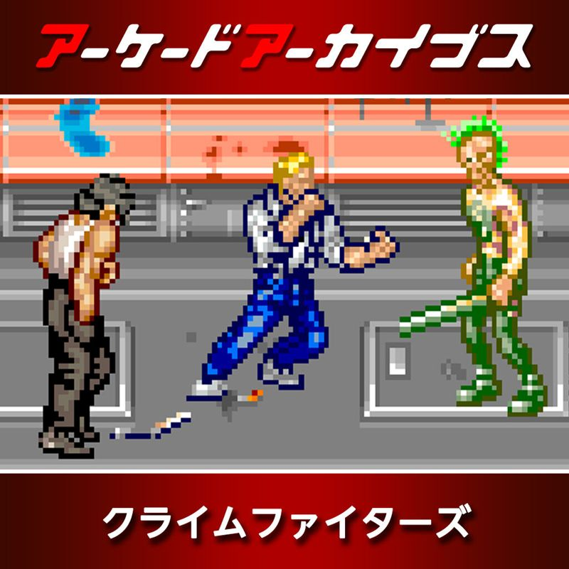
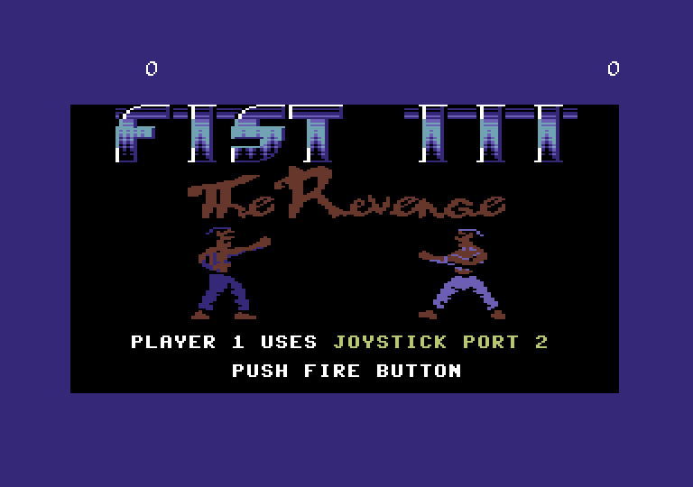
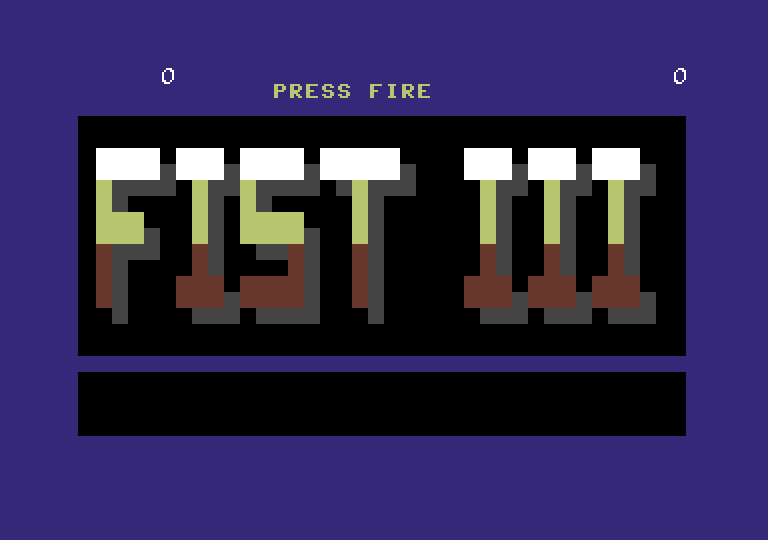
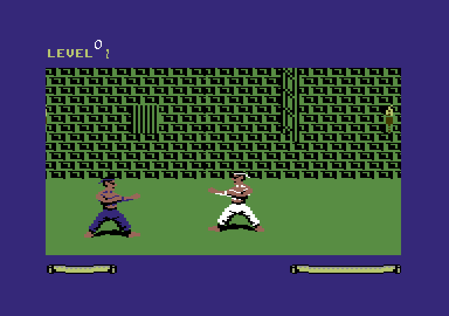
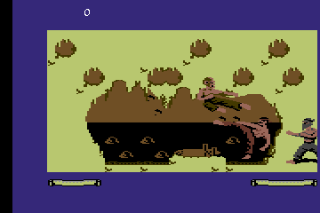
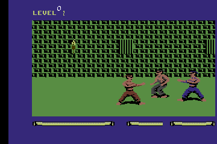
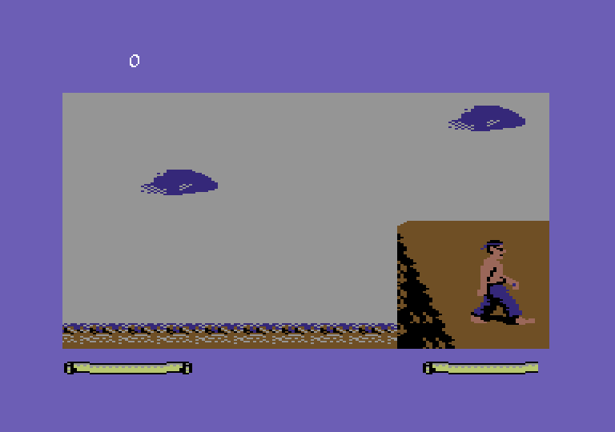
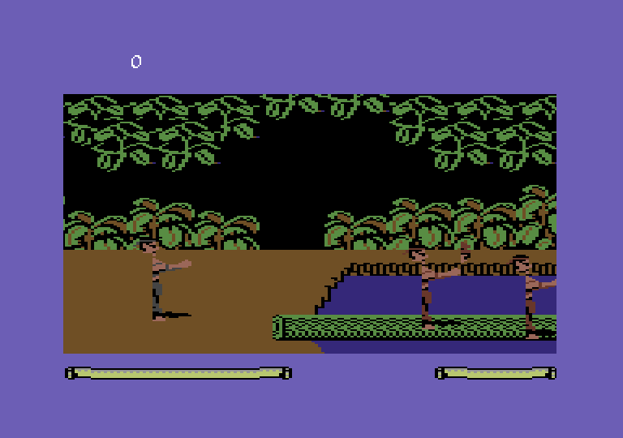
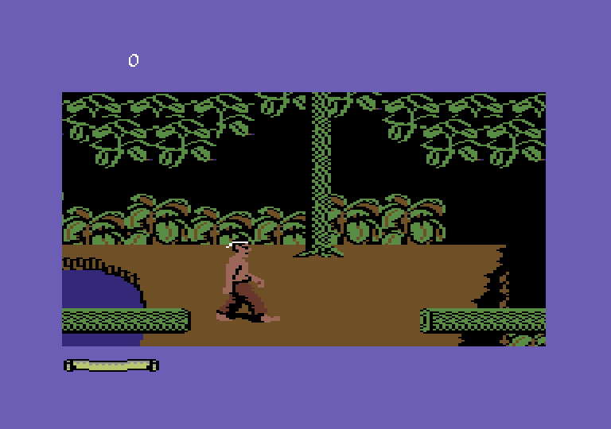

Devlog
Building a C64 beat'em-up on the engine of Fist II: The Legend Continues (Beam Software / Melbourne House, 1986). It started on 6 October 2026 by taking the original apart: first an exact rebuild from the tape, then a rewrite in my own style, and on top of that a game of our own. Where it's heading already has a working title: Fist III: The Revenge. I honestly don't know whether I'll rebuild the whole game on top of the Reverse Engineering, but we'll see. Meanwhile I'm using AI models quite a lot to improve the game engine and add new things to it, such as: a new graphics map for each level, new music with Sound Effects, more enemy characters, and a "boss" stage at the end of each level. I take inspiration from two games I really love. The first is the legendary Double Dragon and the second is Crime Fighters, a great game from Konami. I hope you enjoy the devlog of my game.

Short posts, newest first. The original game on Lemon64.

#8 · · Fist II Remaster
Two screens and a tune
A new intro in the spirit of Double Dragon II: a logo and two fighters, then the credits, swapping while the music keeps playing.
Read →
#7 · · Fist II Remaster
A game around the levels
A title screen, game over with a countdown to continue, game complete, and a fade between levels. The title screen is a level nobody plays.
Read →
#6 · · Fist II Remaster
The boss
Level 1 has an ending: a boss who comes alone, in white, with three energy bars. My graphics for him aren't drawn yet. It didn't matter.
Read →
#5 · · Fist II Remaster
Hit without touching
A jump kick sails over the enemy's head and he goes down anyway. We measured every blow to the pixel, found the one move to blame, and paid a small price for the fix.
Read →
#4 · · Fist II Remaster
Depth, knock-downs and v3.2-alpha
The street got depth, a hidden bug came out (the enemies had been half frozen), a release went out at 19:31, and an hour later the fights got rougher.
Read →
#3 · · Fist II Remaster
From demo to game
Three days of turning a fight room into a game: 45 stale addresses, a temple that hung, sound effects on the SID, and levels that load as data.
Read →
#2 · · Fist II Remaster
The giant day
98 commits in one day: an exact rebuild of the original, a rewrite in my own style, and by night three fighters on screen at a clean 50 Hz.
Read →
#1 · · Fist II Remaster
Where it starts: Fist II, 1986
The game we're taking apart: a 1986 karate adventure that the press didn't love, and the first evening with its tape, its memory and its joystick code.
Read →